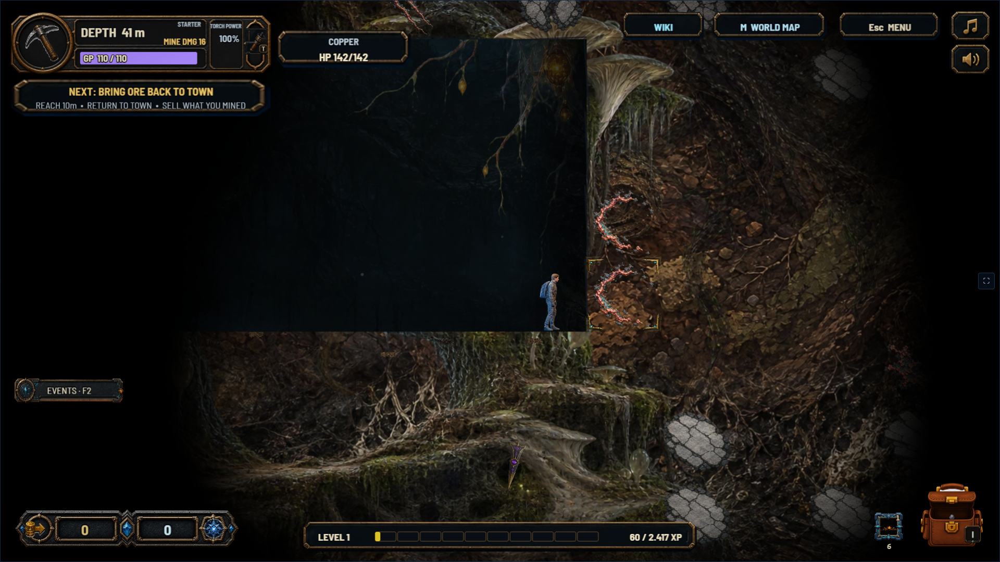
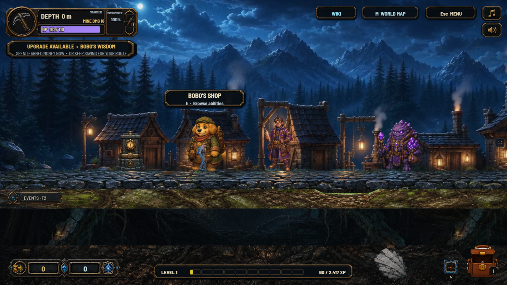

Tile HP beside GP.
Clear merchant interactions.
The approved presentation now runs in the actual game. The target plate tracks the tile being mined, and merchant names and actions stay aligned inside the viewport.
Verified with live mining and shop inputs, three viewport sizes, all five surface merchants, screen-edge clamping, and camera zoom.

